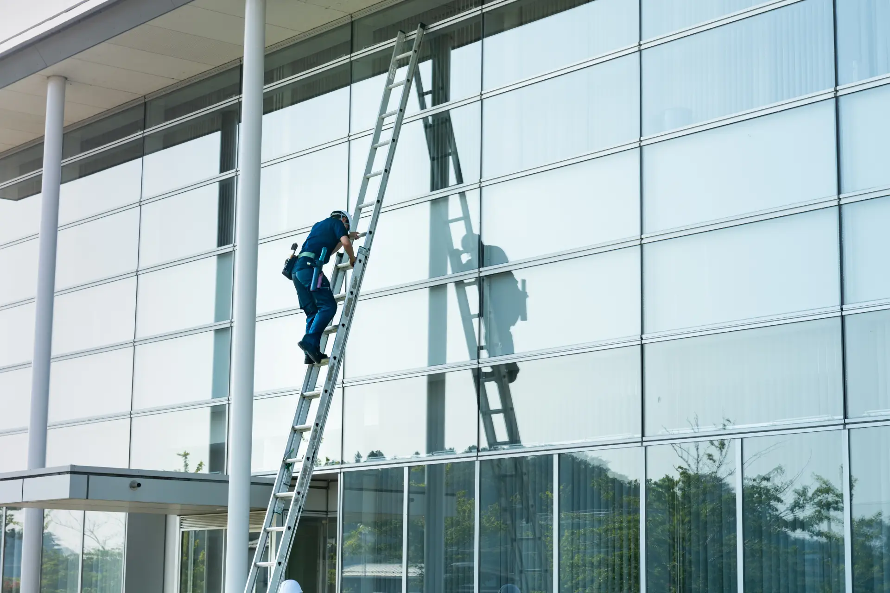

Especialidad

Limpieza de Cristales en Altura
Equipos de seguridad homologados para fachadas de hoteles y edificios de oficinas.
- Trabajos verticales y pértigas
- Personal con certificación PRL
- Fachadas de gran altura
- Sin interrumpir la actividad